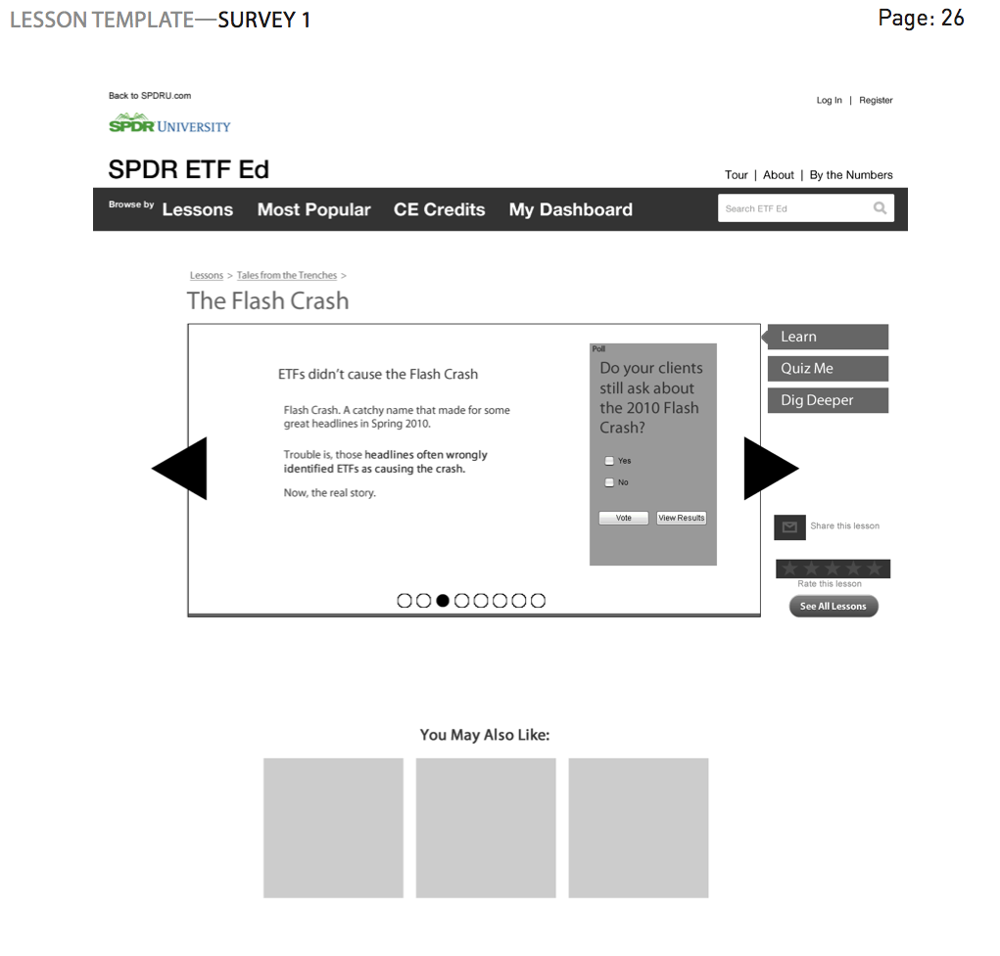
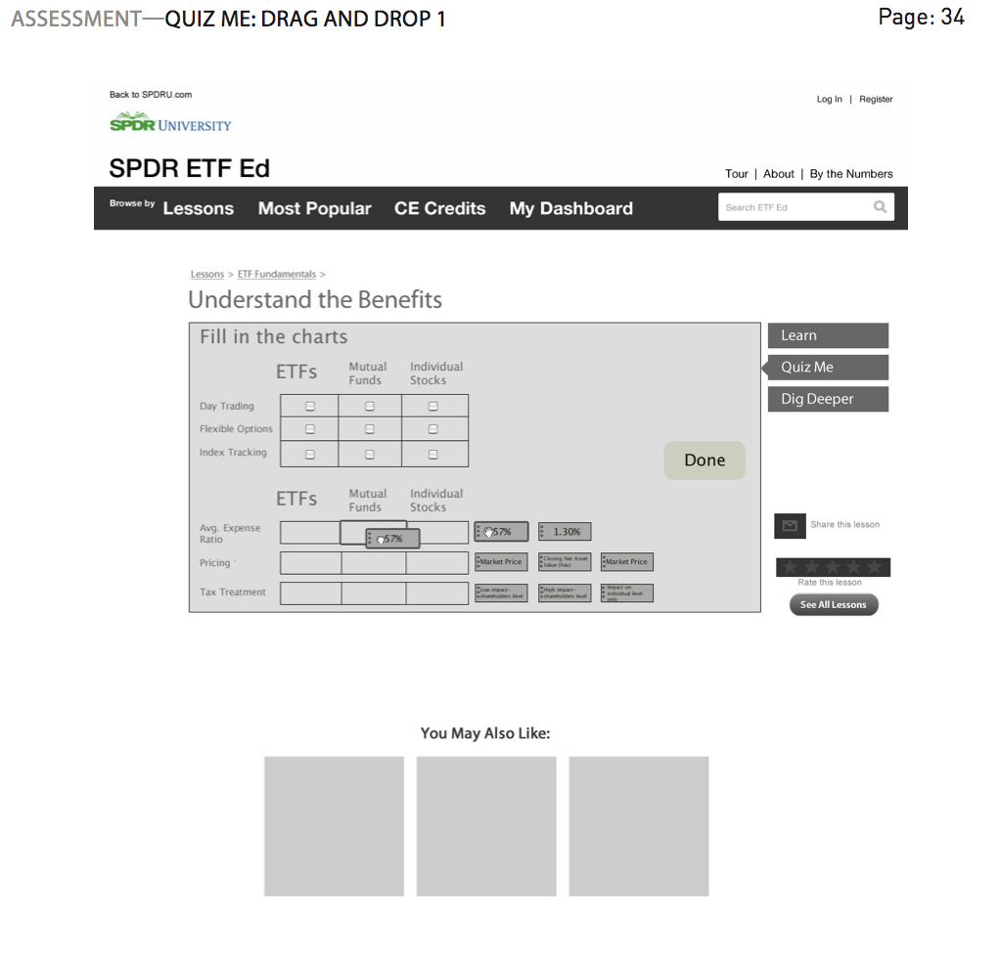
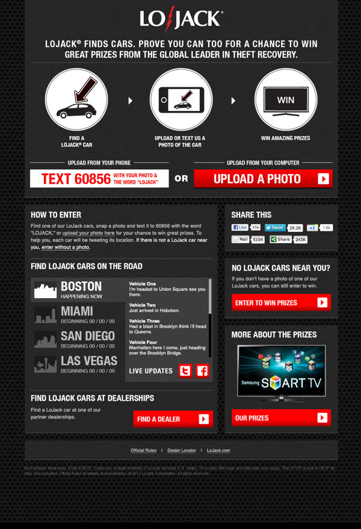

SSgA's ETF Ed
Download the complete set of wireframes here (PDF 13MB)
Designing the information architecture for SSgA's SPDR ETF Ed was a fun project because
I was given the responsibility of applying the heuristic and usability principles that
I'm a student and practitioner of. The exercise of trying to solve the problems and pain
points of the many financial advisors and stakeholders that our team interviewed was
challenging and satisfying to crack, and the project also gave me a chance to really
learn Adobe Fireworks and InDesign. Below are some examples of the wireframes that I
constructed and handed off to our development team.
View the site: https://spdru.com/etfed
Here are examples of the wireframes:


LoJack's biglojackarrow.com
I produced the responsive site for the Big LoJack Arrow Campaign, which accepted user photo
entries to win contest prizes such as a Samsung Smart TV. Users also had the option of entering by MMS on the go.
People were driven to our site by online banner ads, but more importantly from our street teams roaming
LoJack's 4 biggest markets in cars with 6 foot flashing arrows on top, demonstrating LoJack's ability to locate vehicles.
